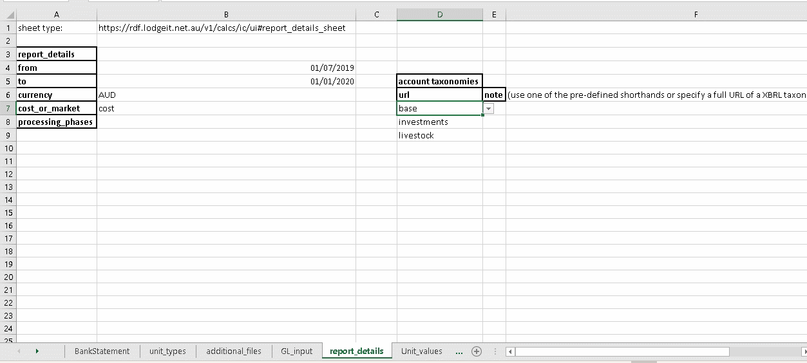
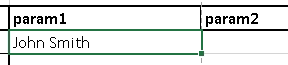
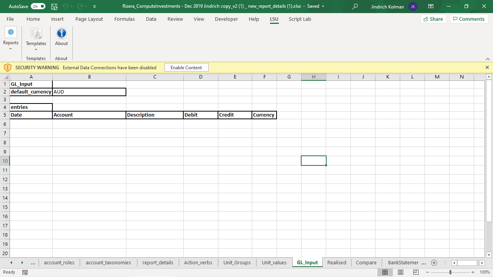
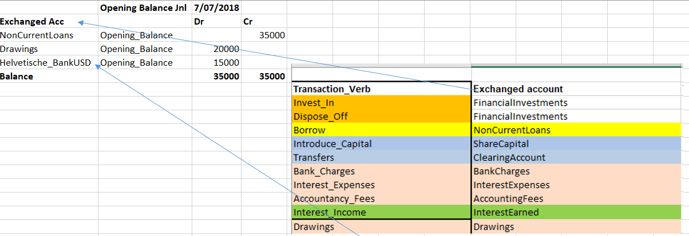

Account names, unit names, member names, etc, must be specified exactly. “x 123 456” is not the same as “x-123-456”.
Sheet name has to start with “bankstatement “
Account_Number is ignored, only Account_Name matters
opening balance can only be correctly processed for bank accounts in the same currency as report currency.
Items in balance sheet and other reports get randomly reordered. (a general robust bug)
Robust needs to know what General_ledger (GL) accounts there are. For each account, it needs to know:
name - an arbitrary string, ideally unique
parent-child relationships with other GL accounts
The initial set of accounts is specified in the field “account taxonomies”. You can select one or more prepared sets, or enter your own URL with a XML description of account hierarchy.

Robust also generates some accounts automatically, to subcategorize some accounts by bank name, by investment, by livestock name, etc.
Users can address accounts by names, or by roles:
If a trading account Financial_Investments already contains
an account with id Financial_Investments_realized, either it has to have a role Financial_Investments/realized,
or is not recognized as such, and a new one with proper role is proposed. This allows us to abstract away from ids,
because Financial_Investments_realized might already be an id of another user account, intended for a different purpose.
Or:
mixing and matching roles: consider a case where we have multiple bank accounts, each needs a corresponding CurrencyMovement sub-account, but we want a part of the bank accounts to use one CurrencyMovement account and a part to use another:
<ComprehensiveIncome>
<VolatileCurrencyMovement>
<BitcoinCurrencyMovement>
</VolatileCurrencyMovement>
<NormalCurrencyMovement>
<Bank1CurrencyMovement>
</NormalCurrencyMovement>
</ComprehensiveIncome>
Thus, we have to specify these accounts manually (in a xml file). And we have to assign the right roles to them, so the system can recognize them.
A role is a path, much like a file path in a computer:

The exclamation marks (!) are path separators, like “/” in a file path. There isn’t a good way to manage these roles yet, but we need to understand the “<Member>” part above. The angle brackets (<>) enclose a “slot”, that is, a variable, in other words, an empty place, where something else will be put. That something is taken from the “param” columns:

In effect, the role path becomes: “!Share_of_Profit/(Loss) – Preserved/Taxable!John Smith!”. Each angle-bracketed slot has to match up with one nonempty “param” column.
action verbs in general:
Invest_In
Dispose_Off
magic: affect counteraccount's Unit subaccount
"trading account" parameter of action verb:
magic: affect "trading account"'s Unit subaccountimplemented:

not implemented:

bank opening balance row in excel
translation to GL can be in one of two ways:
posted into Historical_Earnings account at opening date
creates correct balance sheet, but creates inconsistency when analyzing individual bank accounts (cashflow), because bank account is debited at opening date
currently implemented by 'Historical_Earnings_Lump' action verb
posted into Current_Earnings account before opening date
By default, currency movement is accounted for in a declarative way. This is in contrast to the use of adjustment transactions. Our GL balances at any point in time. In-depth explanation of the principle is in Tutorial on multiple currency accounting.
In short: bank account is in some currency, for example USD. Report currency is for example AUD. If bank account is debited 100 USD on "date(2019,9,9)", a corresponding equity/p&l account is credited, for example, 120 AUD, according to the conversion rate valid at the transaction date. The GL always balances because the drift in USD/AUD rate is accounted for on the Currency_Movement account, for example CurrencyMovementHelvetische_BankUSD. The entry created on this account would be literally CR 120 USD, DR 100 AUD, but things are a little more complicated, and the actual entry looks like this:
CR 100 USD, DR 100 without_currency_movement_against_since('USD','USD',['AUD'],date(2019,9,9)). This whole
without_currency_movement_against_since('USD','USD',['AUD'],date(2019,9,9))is understood as "USD, disregarding movement of USD against AUD since date(2019,9,9)". The program does the appropriate conversion to AUD when generating reports.
Another declarative unit is “without_movement_after(Unit, Date)”.
Todo: the semantics are similar, review if we need both. review if the use of this abstract unit is necessary here, i think we can simplify.
todo: explain split into historical and current entry, for historical transactions.
S_Transaction processing error recovery:
It's not possible to determine order of transactions that transpired on one day, so to avoid confusion, when we fail to process a transaction, we go back all the way to the end of the previous day, and try to run the reports again, excluding all the transactions of the erroring day and after.
We originally tried generating all reports for the "last good" day, but that had issues, at least with investment report failing because of missing exchange rates. So, rather, we run the reports for the request end date.
Robust is currently a single-pass architecture. Processing is triggered by submitting a request file in RDF format (+ currently also a legacy XML file), that should be processed, to the web API. This file is generated by the excel plugin, contains data extracted from multiple worksheets, and can reference additional files to be processed (XBRL taxonomy, bank statements in CSV format..). Robust tries to fit the information in those files into a single model, fill in missing information, and, if successful, it produces multiple output files (“reports”).
In comparison to full XBRL support, we do not enable computing of arbitrary facts by arbitrary formulas, and we have a hard-coded set of reports that display a hard-coded set of facts.
(wip, #174),
Let's ignore how openexchangerates actually calculates their values. In particular, we ignore the possibility that what the service (or another) provides as a date's value is actually the previous day's average value, and we will not try to compensate, for such hypothetical issues, in ledger's core logic.
We assume a simplified theory:
an exchange rate for a particular date is the rate at which a unit is/was traded at that day.
A day is an atomic unit (for purposes of exchange dates discussion).
Every transaction belongs to a date.
Using days as a time unit is arbitrary, the core logic would support, for example, hours, just as well. What really matters is that (report) time is subdivided divided into discrete units.